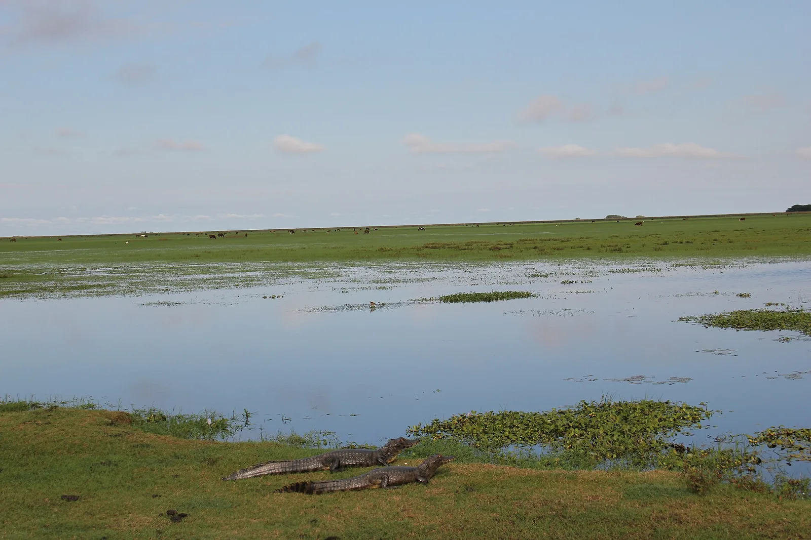
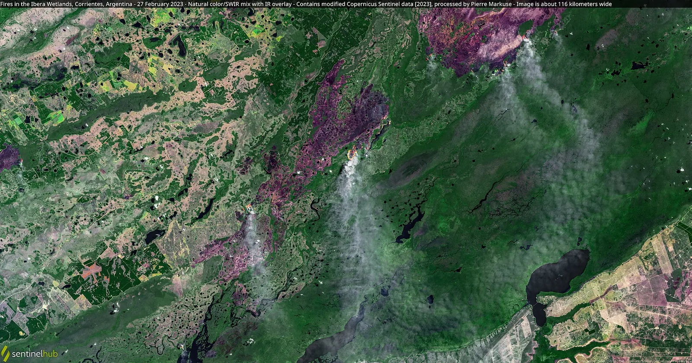

E9 · Este
E9 · Osten
E9 · East
Esteros del Iberá
Y vi un yaguareté —el primero en volver, en cien años, a un pastizal que ya lo daba por perdido.
Und ich sah einen Jaguar — den ersten, der nach hundert Jahren in ein Grasland zurückkehrte, das ihn längst verloren gegeben hatte.
And I saw a jaguar — the first to return, in a hundred years, to a grassland that had already given it up for lost.
Información
El Parque Nacional Iberá conserva más de 195.000 hectáreas en la provincia de Corrientes, dentro de la ecorregión de los Esteros del Iberá, uno de los humedales más grandes de Sudamérica.
El yaguareté se había extinguido en Corrientes. En 2018 nacieron los dos primeros cachorros en el proyecto de reintroducción, y en enero de 2021 una hembra con sus dos crías pasó a vivir en libertad plena: los primeros yaguaretés sueltos en la provincia después de más de setenta años de ausencia.
La población sigue creciendo. Parques Nacionales contabiliza hoy al menos 35 yaguaretés viviendo libres en el Iberá, y algunos se trasladaron desde ahí a otras áreas, como el Parque Nacional El Impenetrable.
Information
El Parque Nacional Iberá conserva más de 195.000 hectáreas en la provincia de Corrientes, dentro de la ecorregión de los Esteros del Iberá, uno de los humedales más grandes de Sudamérica.
El yaguareté se había extinguido en Corrientes. En 2018 nacieron los dos primeros cachorros en el proyecto de reintroducción, y en enero de 2021 una hembra con sus dos crías pasó a vivir en libertad plena: los primeros yaguaretés sueltos en la provincia después de más de setenta años de ausencia.
La población sigue creciendo. Parques Nacionales contabiliza hoy al menos 35 yaguaretés viviendo libres en el Iberá, y algunos se trasladaron desde ahí a otras áreas, como el Parque Nacional El Impenetrable.
Information
El Parque Nacional Iberá conserva más de 195.000 hectáreas en la provincia de Corrientes, dentro de la ecorregión de los Esteros del Iberá, uno de los humedales más grandes de Sudamérica.
El yaguareté se había extinguido en Corrientes. En 2018 nacieron los dos primeros cachorros en el proyecto de reintroducción, y en enero de 2021 una hembra con sus dos crías pasó a vivir en libertad plena: los primeros yaguaretés sueltos en la provincia después de más de setenta años de ausencia.
La población sigue creciendo. Parques Nacionales contabiliza hoy al menos 35 yaguaretés viviendo libres en el Iberá, y algunos se trasladaron desde ahí a otras áreas, como el Parque Nacional El Impenetrable.
En el verano de 2022 el fuego arrasó Corrientes. Desde enero los incendios afectaron más de 900.000 hectáreas, más del 10 % de la superficie provincial, y los humedales perdieron 534.000 hectáreas entre esteros, bañados y valles aluviales.
Dentro del área protegida se quemó cerca de la mitad del Parque Nacional Iberá —el 57 % de su cobertura vegetal— y alrededor del 20 % de la reserva, con predominio de severidades moderada-alta y alta. Los sectores más castigados fueron el norte, el corredor Mburucuyá-San Roque y Colonia Carlos Pellegrini.
Fue un año después de que la primera familia de yaguaretés pasara a vivir en libertad plena. El CONICET puso en marcha una evaluación de los efectos a mediano plazo sobre la biodiversidad.
En el verano de 2022 el fuego arrasó Corrientes. Desde enero los incendios afectaron más de 900.000 hectáreas, más del 10 % de la superficie provincial, y los humedales perdieron 534.000 hectáreas entre esteros, bañados y valles aluviales.
Dentro del área protegida se quemó cerca de la mitad del Parque Nacional Iberá —el 57 % de su cobertura vegetal— y alrededor del 20 % de la reserva, con predominio de severidades moderada-alta y alta. Los sectores más castigados fueron el norte, el corredor Mburucuyá-San Roque y Colonia Carlos Pellegrini.
Fue un año después de que la primera familia de yaguaretés pasara a vivir en libertad plena. El CONICET puso en marcha una evaluación de los efectos a mediano plazo sobre la biodiversidad.
En el verano de 2022 el fuego arrasó Corrientes. Desde enero los incendios afectaron más de 900.000 hectáreas, más del 10 % de la superficie provincial, y los humedales perdieron 534.000 hectáreas entre esteros, bañados y valles aluviales.
Dentro del área protegida se quemó cerca de la mitad del Parque Nacional Iberá —el 57 % de su cobertura vegetal— y alrededor del 20 % de la reserva, con predominio de severidades moderada-alta y alta. Los sectores más castigados fueron el norte, el corredor Mburucuyá-San Roque y Colonia Carlos Pellegrini.
Fue un año después de que la primera familia de yaguaretés pasara a vivir en libertad plena. El CONICET puso en marcha una evaluación de los efectos a mediano plazo sobre la biodiversidad.
Fuentes
Quellen
Sources
- CONICET, Incendios en Corrientes: evaluarán los efectos a mediano plazo sobre la biodiversidad — https://www.conicet.gov.ar/incendios-en-corrientes-evaluaran-los-efectos-a-mediano-plazo-sobre-la-biodiversidad/
- CONICET, Análisis preliminar de la severidad del fuego en el Parque y Reserva Nacional Iberá — https://ri.conicet.gov.ar/handle/11336/237402
- Gobierno de Argentina, Información satelital sobre los incendios en Corrientes — https://www.argentina.gob.ar/noticias/informacion-satelital-sobre-los-incendios-en-corrientes
Galería
Galerie
Gallery


Fuentes
Quellen
Sources
- Administración de Parques Nacionales, Argentina, Parque Nacional Iberá — https://www.argentina.gob.ar/parquesnacionales/nea/parque-nacional-ibera consultado 2026-10-05abgerufen 2026-10-05accessed 2026-10-05
- Administración de Parques Nacionales, Argentina, Nacieron tres nuevos cachorros de yaguareté en el Parque Nacional Iberá — https://www.argentina.gob.ar/noticias/nacieron-tres-nuevos-cachorros-de-yaguarete-en-el-parque-nacional-ibera consultado 2026-10-05abgerufen 2026-10-05accessed 2026-10-05